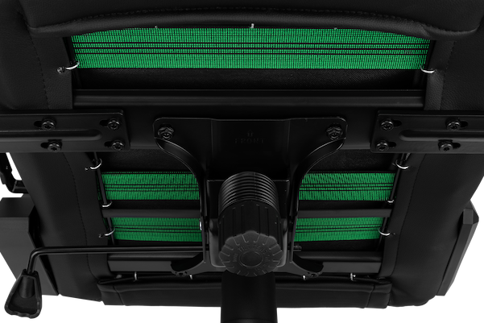

2E GAMING HIBAGON
II
Black/CAMO, Black/Red
Створено для безкомпромісних гравців! Крісло 2E GAMING HIBAGON II – виняткове поєднання стилю, комфорту та функціональності, розроблене для інтенсивних ігрових сесій і продуктивної роботи за комп’ютером.
Стильний дизайн переможців
Червоно-чорне крісло заряджає на перемогу вже самим своїм виглядом. Конструкція крісла продумана до найменших деталей для оптимальної підтримки спини під час тривалих сесій.
2E GAMING HIBAGON II Black/CAMO
Камуфльований дизайн підкреслює бойовий дух і готовність йти до кінця. Завдяки ергономічній конструкції крісло 2E GAMING HIBAGON II дає змогу налаштувати сидіння, спинку та підлокітники під потреби користувача, забезпечуючи правильне положення тіла під час гри або роботи.
Велюрові подушки, які знають і пам’ятають, що таке турбота
Велюрові подушки – «прихована зброя» цього крісла. Адже вони дають змогу не тільки підтримати природне положення тіла, а й робити це саме в тих точках тіла, де приховано найбільше навантаження. Тепер комірна та поперекова зони в повній безпеці, адже їм гарантована максимальна підтримка, а тілу – комфорт!
Бажана висота
Завдяки пневматичному підйомному механізму 4-го класу користувач може регулювати висоту крісла так, як рухаються справжні професіонали – тихо, легко й плавно. Тому крісло загартовано для найекстремальніших ситуацій, витримає шалений натиск і залишиться в надійному положенні.
-
Грайте без втоми
Оптимальну жорсткість забезпечує наповнювач із щільної піни, створює комфортні умови для тривалих ігрових сесій.
-

Надійна основа на роки
Масивна металева хрестовина та сталева рама є запорукою тривалої експлуатації. Тож надійність крісла впродовж багатьох років використання залишиться незмінною. Ігрове крісло створено з думкою про комфорт власника, тому має спеціальний механізм «метелик», що дає змогу кріслу гойдатися на кут до 18°. Механізм легко регулюється за допомогою пружини, яка розташована під сидінням.
Якісні матеріали
Якісне зовнішнє оздоблення з екошкіри може пропускати повітря, стійке до подряпин і зношення та легко очищується від різноманітних забруднень.
-

4D-підлокітники: новий вимір рухів
Справжня свобода рухів із підлокітниками 4D. Підлокітники регулюються за глибиною, висотою, шириною та кутом нахилу. Ще ніколи рухи не були такими легкими і вільними. 4D-підлокітники – більше рівнів для рухів.
-

Три положення регулювання
3D-регулювання підлокітників дає змогу завжди тримати руки в оптимальному положенні як для гри, так і для відпочинку.
Залиште втому суперникам
Захотілося перепочити? Із конструкцією 2E GAMING HIBAGON II це легко та просто зробити! Достатньо відкинути назад спинку крісла (до 180˚), і можна розслабитися та набратися сил для наступних баталій або перегонів.
Особливості
- Екошкіра
- Сталева рама й посилена металева хрестовина
- Пінний наповнювач високої щільності
- Велюрові подушки з ефектом пам’яті
- Газліфт 4-го покоління
- Кут нахилу від 90 до 180º
- Посилені коліщатка діаметром 75 мм
- 3D-підлокітники
- Механізм типу «метелик», що дає змогу гойдатися на кут до 18°